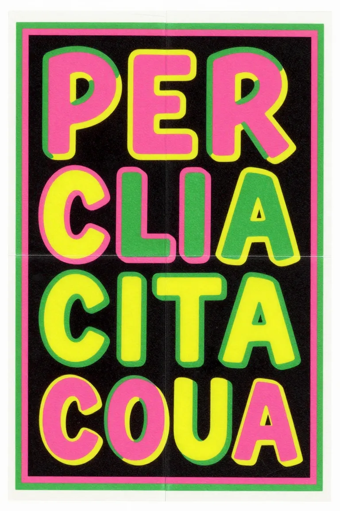

En konsertplakat i fluorescerende farge for chicha-musikk. Plakatmakeren tegner store konturerte bokstaver og en tett bord for hånd, og trykker i 2 til 5 høylytte, flate farger på billig papir.

Kjerneidé
En fluorescerende plakat med store håndtegnede bokstaver kan kalle en folkemengde til en gatekonsert til en svært lav pris.
Designprinsipper
Tegn overskriften med store bokstaver, tykk kontur og slagskygge.
Bruk fluorescerende rosa, grønt, gult og oransje, med sort til konturen.
Ramm inn arket med en tett bord av gjentatte former.
Legg til en fotoutklipp av bandet eller et tegnet ansikt, i flat farge.
Sett navn, sted og dato i en tett blokk.
Trykk med silketrykk i korte opplag på billig papir.
La neonfargene kollidere, og godta et gap eller en overlapping på 1 til 3 mm.